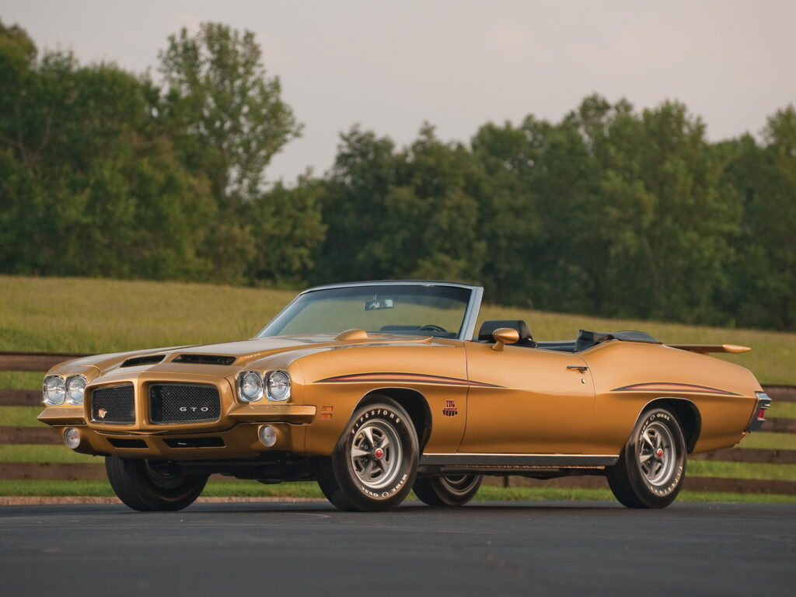
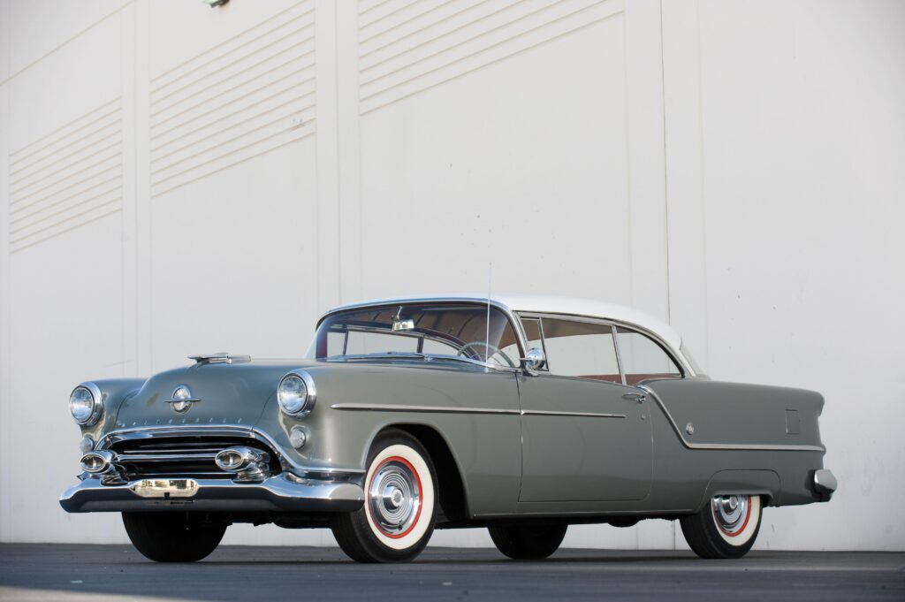

Рестайлинг модели в 1971 назван одним из худших, поскольку покупатели не оценили предложенные внешние изменения, переделанный нос muscle-car. GTO Judge данного модельного ряда не прожил даже до окончания сезона, за это время производитель продал всего 374 экземпляры, а в кузове кабриолет Pontiac GTO Judge Convertible и вовсе было выпущено только 17 единиц.
Pontiac GTO Judge Convertible 1971
Oldsmobile F-88
Изначально Oldsmobile F-88 создавали в качестве концепт-кара, который представили на 46-м автосалоне в Чикаго в марте 1954 году. Но, в серийное производство модель так и не попала. Всего было выпущено лишь 4 единицы, что сделало автомобиль в наше время самым дорогой моделью малоизвестного бренда. В 2005 году автомобиль продали на аукционе за рекордные 3 240 000 долларов.
Oldsmobile F-88
Ford Torino King Cobra
1970 году американский производитель разработал концептуальную версию модели, которая должна была составить достойную конкуренцию Dodge Charger Daytona и Plymouth Superbird в гонках NASCAR Sprint Cup. Всего было выпущено 3 экземпляры прототипа, один из которых недавно продали с аукциона за 549 900 долларов.